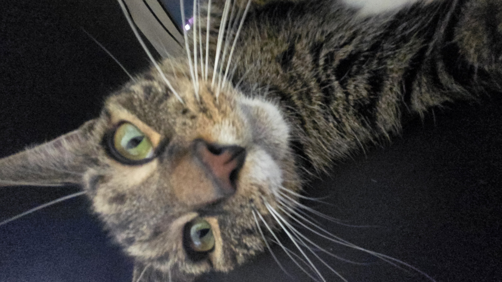

About This Website

Hi! I made this website for my web dev class. It's a simple link organizer where you can save your favorite websites. Enjoy this image of my cat Tony!
What This Site Does
- Lets you create boxes to organize links
- Saves your links so you can find them later
- Keeps everything in your browser (no account needed)
How To Use It
- Go to the Home page
- Create a box with a name like "School" or "Fun Stuff"
- Add links to that box
- Click on links to visit websites!
About Me
My name is John Craig. I'm a student at Ivy Tech Community College, and this is my second website project. My first project was a web app using electron to make my own game launcher for my computer games. I chose to make this website to store links to wikis and various things for my diffrent games, and also learn more about web development.